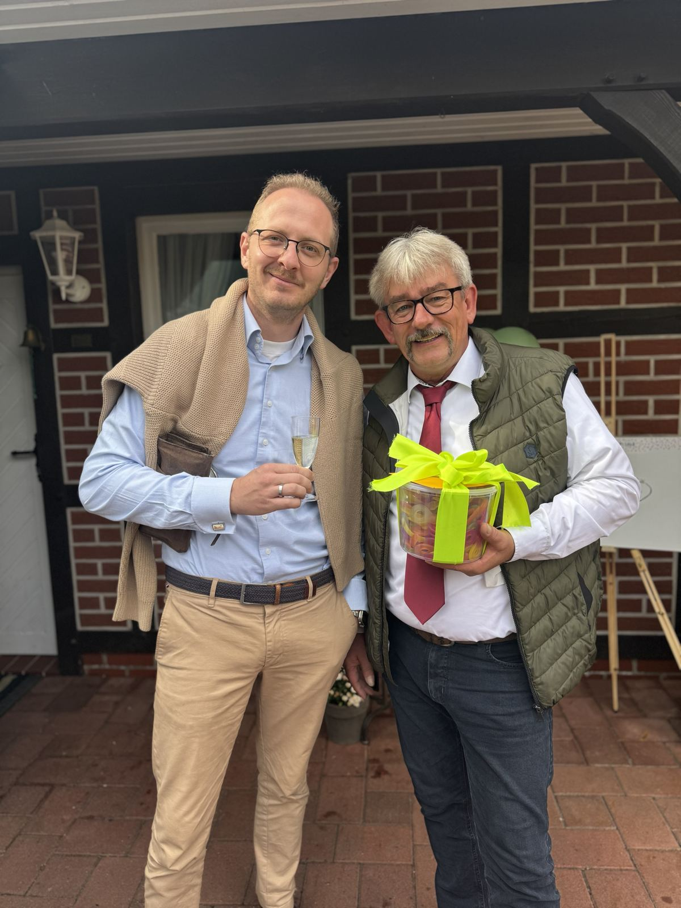

Startseite / Über mich
Maximilian Höfler
Inhaber der Fahrschule On Track, Fahrlehrer aus Leidenschaft und Gastgeber des Podcasts Lenkrad-Legenden.

Drive with style.
Ich bin gelernter Kfz-Mechatroniker und habe nach meiner Ausbildung zwei Jahre in der Branche gearbeitet. Dann habe ich gemerkt, was mir am meisten Spaß macht: unterrichten und mein Wissen über das Fahren weitergeben.
Seit 2012 bin ich Fahrlehrer. Fahren ist für mich mehr als Pflicht – es ist Freude und ein Stück Freiheit. Deshalb setze ich auf Elektromobilität, den Fahrsimulator und neue Unterrichtsmethoden.
Mein Ziel: dass du sicher fährst und dabei Spaß hast. Willkommen bei On Track – der next generation Fahrschule.